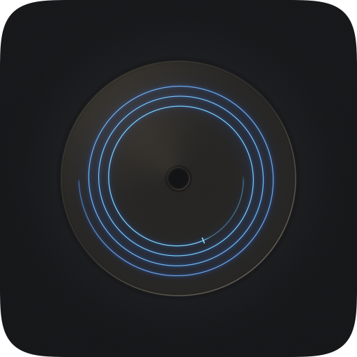

Pregap for macOS
Pregap collects nothing. It has no network access of any kind, so there is no analytics, no tracking, no automatic crash reporting, no account, no advertising, and no third-party code that could do any of those things. Nothing you do in the app leaves your Mac unless you choose to send it.
Audio files you add are read only so they can be decoded and written to the disc. Source files are never modified. The decoded audio is written to a temporary area inside the app's own sandbox container and is deleted when you are finished with it. Pregap can only see the files and folders you explicitly add — the macOS App Sandbox gives it no access to anything else.
Your preferences — which CD-Text fields are visible, track list column widths and order, conversion quality, the default gap — are stored locally on your Mac in the app's own settings. They are not shared with anyone, including us.
To help diagnose a failed burn or a crash, Pregap keeps a plain-text log of what it did in each session: the drives and discs it saw, the names of the files you added, the burn settings, and any errors. The logs of the last ten sessions are kept inside the app's own sandbox container and older ones are deleted. The log is never sent anywhere by the app. Help ▸ Save Session Log… saves a copy to a place you choose, so you can read it and, if you want, attach it to an email to support.
Pregap does not track you across apps or websites, does not build a profile of you, and does not share any information with data brokers or advertisers. There is no data to share.
If you email support, we receive whatever you put in that email — your address and whatever you describe. It is used only to answer you, is never sold or shared, and is deleted when the conversation is finished.
If you installed Pregap from the Mac App Store, Apple handles the purchase or download and provides us only anonymous, aggregate sales and usage statistics. If you have opted in to sharing crash data with developers in macOS, Apple may pass us anonymous crash reports. Both are governed by Apple's privacy policy, not this one, and neither identifies you.
Pregap is safe for all ages. It collects no data from anyone, including children under 13.
If this policy ever changes, the updated version will be posted on this page with a new date. Should a future version of Pregap ever gain a feature that requires transmitting anything at all, this policy will be updated before that version ships.
Questions about this policy: support@pregap.app